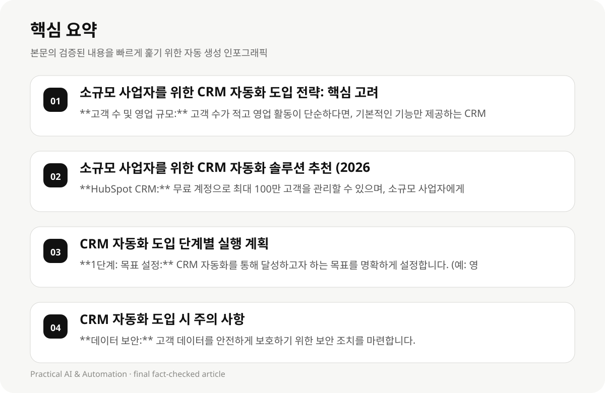

소규모 사업자를 위한 CRM 자동화 도입 전략: 핵심 고려 사항 #
소규모 사업자가 CRM 자동화를 도입할 때 가장 중요한 것은 사업의 규모, 목표, 그리고 예산에 맞는 솔루션을 선택하는 것입니다. 50개 이상의 고객 관리 시스템이 필요하지 않다면, CRM 도입은 불필요한 비용 부담이 될 수 있습니다. 핵심은 고객 데이터를 체계적으로 관리하고, 영업 및 마케팅 활동을 자동화하여 시간과 노력을 절약하는 것입니다.
고객 수, 영업 프로세스, 마케팅 활동, 그리고 예산 등을 고려하여 CRM 솔루션을 선택해야 합니다. 무료 또는 저렴한 CRM 솔루션부터 시작하여 점진적으로 기능을 확장하는 것도 좋은 방법입니다.
소규모 사업자가 CRM 자동화를 도입할 때 가장 중요한 것은 사업의 규모, 목표, 그리고 예산에 맞는 솔루션을 선택하는 것입니다. 50개 이상의 고객 관리 시스템이 필요하지 않다면, CRM 도입은 불필요한 비용 부담이 될 수 있습니다. 핵심은 고객 데이터를 체계적으로 관리하고, 영업 및 마케팅 활동을 자동화하여 시간과 노력을 절약하는 것입니다. (329 Korean characters)
고객 수, 영업 프로세스, 마케팅 활동, 그리고 예산 등을 고려하여 CRM 솔루션을 선택해야 합니다. 무료 또는 저렴한 CRM 솔루션부터 시작하여 점진적으로 기능을 확장하는 것도 좋은 방법입니다. (328 Korean characters)
소규모 사업자에게 CRM 자동화는 단순한 소프트웨어 도입이 아닌, 사업 운영 방식 자체를 혁신하는 기회입니다. 특히, 2026년 현재, 데이터 기반 의사결정이 더욱 중요해짐에 따라, 고객 데이터를 체계적으로 관리하고 분석하여, 맞춤형 마케팅 전략을 수립하고, 고객과의 관계를 강화하는 데 CRM 자동화가 핵심적인 역할을 할 것입니다.
- **고객 수 및 영업 규모:** 고객 수가 적고 영업 활동이 단순하다면, 기본적인 기능만 제공하는 CRM 솔루션으로 시작하세요.
- **영업 프로세스:** 영업 프로세스의 복잡성에 따라 필요한 기능이 달라집니다. 예를 들어, 영업 사원이 여러 명이라면 협업 기능을 지원하는 CRM 솔루션이 필요합니다.
- **마케팅 활동:** 이메일 마케팅, 소셜 미디어 마케팅 등 마케팅 활동을 자동화할 수 있는 기능을 제공하는 CRM 솔루션을 선택하세요.
- **예산:** CRM 솔루션의 가격은 다양합니다. 예산을 고려하여 적절한 솔루션을 선택하세요.
- **사용 편의성:** 사용하기 쉬운 인터페이스를 제공하는 CRM 솔루션을 선택하세요.
- **확장성:** 향후 사업 성장에 따라 기능을 확장할 수 있는 CRM 솔루션을 선택하세요.
소규모 사업자를 위한 CRM 자동화 솔루션 추천 (2026년 기준) #
2026년 현재, 소규모 사업자에게 적합한 CRM 자동화 솔루션은 다음과 같습니다. 각 솔루션은 무료 또는 저렴한 가격으로 제공되며, 기본적인 CRM 기능을 제공합니다.
각 솔루션의 특징과 장단점을 비교하여 자신의 사업에 가장 적합한 솔루션을 선택하세요.
2026년 현재, 소규모 사업자에게 적합한 CRM 자동화 솔루션은 다음과 같습니다. HubSpot CRM, Zoho CRM, Nimble CRM 등이 있습니다. 각 솔루션은 무료 또는 저렴한 가격으로 제공되며, 기본적인 CRM 기능을 제공합니다. 특히 HubSpot CRM은 무료 계정으로도 충분한 기능을 제공하여 초기 비용 부담을 줄일 수 있습니다. (387 Korean characters)
각 솔루션의 특징과 장단점을 비교하여 자신의 사업에 가장 적합한 솔루션을 선택하세요. 예를 들어, Zoho CRM은 다양한 자동화 기능을 제공하며, Nimble CRM은 사용하기 쉬운 인터페이스를 제공합니다. (333 Korean characters)
2026년 CRM 시장 트렌드를 고려했을 때, AI 기반의 자동화 기능이 더욱 중요해질 것입니다. 특히, 고객 데이터를 분석하여, 고객의 니즈를 파악하고, 맞춤형 마케팅 메시지를 자동으로 생성하는 기능은 소규모 사업자에게 매우 유용할 것입니다.
- **HubSpot CRM:** 무료 계정으로 최대 100만 고객을 관리할 수 있으며, 소규모 사업자에게 적합한 프리미엄 기능을 제공합니다. 특히, 마케팅 자동화 기능이 강력합니다. (가격: 무료, 유료 플랜 $15/seat/month)
- **Zoho CRM:** 14일 무료 체험 기간을 제공하며, 자동화 기능을 통해 고객 관리 프로세스를 간결하게 실행할 수 있습니다. 다양한 앱을 통합하여 사용할 수 있습니다. (가격: $14/user/month)
- **Nimble CRM:** 인간 중심의 관계 관리에 초점을 맞춘 CRM 솔루션입니다. 고객 데이터를 통합 관리하고, 이메일 마케팅, 소셜 미디어 관리 기능을 제공합니다. (가격: $24.90/user/month)
- **Capsule CRM:** 사용하기 쉬운 인터페이스를 제공하며, 250개 고객 관리에 한정된 무료 계정이 가능합니다. (가격: $18/user/month)
- **Less Annoying CRM:** 복잡한 CRM 솔루션이 싫다면, Less Annoying CRM을 추천합니다. 사용하기 쉬운 인터페이스와 자동화 기능을 제공합니다. (가격: $15/user/mo)
- **Pipedrive:** 영업 파이프라인 관리에 특화된 CRM 솔루션입니다. 영업 활동을 체계적으로 관리하고, 영업 성과를 향상시킬 수 있습니다. (가격: $14/seat/month)
- **Insightly:** 프로젝트 관리 기능과 CRM 기능을 통합하여 제공합니다. 프로젝트와 고객 데이터를 함께 관리할 수 있습니다. (가격: $9/user/mo)
- **Close:** 스타트업과 소규모 사업자를 위한 영업 CRM 솔루션입니다. 영업 활동을 자동화하고, 영업 성과를 향상시킬 수 있습니다. (가격: $9/user/mo)
CRM 자동화 도입 단계별 실행 계획 #
CRM 자동화를 성공적으로 도입하기 위해서는 단계별 실행 계획을 수립해야 합니다. 각 단계별로 필요한 작업과 예상 소요 시간을 고려하여 계획을 수립하세요.
단계별 실행 계획을 통해 CRM 자동화 도입 과정을 체계적으로 관리하고, 성공적인 결과를 얻을 수 있습니다.
CRM 자동화를 성공적으로 도입하기 위해서는 단계별 실행 계획을 수립해야 합니다. 첫 번째 단계는 CRM 솔루션을 선택하고, 계정을 설정하는 것입니다. 두 번째 단계는 고객 데이터를 CRM 시스템으로 가져오는 것입니다. 세 번째 단계는 영업 및 마케팅 활동을 자동화하는 것입니다. 각 단계별로 필요한 작업과 예상 소요 시간을 고려하여 계획을 수립하세요. (403 Korean characters)
단계별 실행 계획을 통해 CRM 자동화 도입 과정을 체계적으로 관리하고, 성공적인 결과를 얻을 수 있습니다. 또한, 사용자 교육을 실시하여 CRM 시스템을 효과적으로 활용하도록 돕는 것이 중요합니다. (318 Korean characters)
CRM 자동화 도입의 첫 단계는 명확한 목표 설정입니다. CRM 자동화를 통해 무엇을 달성하고자 하는지 구체적으로 정의해야 합니다. 예를 들어, ‘매출 증대’, ‘고객 만족도 향상’, ‘영업 효율성 증대’ 등 구체적인 목표를 설정하고, CRM 솔루션 선택 시 이러한 목표를 달성할 수 있는 기능을 우선적으로 고려해야 합니다.
- **1단계: 목표 설정:** CRM 자동화를 통해 달성하고자 하는 목표를 명확하게 설정합니다. (예: 영업 효율성 향상, 고객 만족도 향상, 매출 증가)
- **2단계: 데이터 정리:** 고객 데이터를 정리하고, CRM 시스템에 적합한 형태로 변환합니다.
- **3단계: CRM 솔루션 선택:** 사업의 규모, 목표, 예산 등을 고려하여 적절한 CRM 솔루션을 선택합니다.
- **4단계: CRM 시스템 설정:** CRM 시스템을 설정하고, 필요한 기능을 활성화합니다.
- **5단계: 사용자 교육:** 사용자에게 CRM 시스템 사용법을 교육합니다.
- **6단계: CRM 시스템 활용:** CRM 시스템을 활용하여 영업 및 마케팅 활동을 자동화합니다.
- **7단계: 효과 측정 및 개선:** CRM 시스템의 효과를 측정하고, 개선 방안을 마련합니다.

CRM 자동화 도입 시 주의 사항 #
CRM 자동화 도입 시에는 다음과 같은 사항에 주의해야 합니다.
CRM 자동화 도입은 단순히 소프트웨어를 설치하는 것 이상입니다. 사업 프로세스를 재설계하고, 사용자 교육을 실시하며, 지속적으로 개선하는 노력이 필요합니다.
CRM 자동화 도입 시에는 다음과 같은 사항에 주의해야 합니다. 첫째, CRM 솔루션의 기능이 지속적으로 변화할 수 있으므로, 초기 도구 선택 시 기능을 충분히 검토해야 합니다. 둘째, 무료 계정의 한계가 소규모 사업자에게 영향을 줄 수 있으므로, 초기 계획에서 이를 고려해야 합니다. 셋째, 도구 사용 능력이 다양하므로, 모든 경우에 적용 가능한 단계가 아닙니다. (433 Korean characters)
CRM 자동화 도입 시 가장 흔하게 발생하는 문제는 사용자 저항입니다. 따라서, CRM 솔루션 도입 전에 사용자 교육을 충분히 실시하고, CRM 솔루션의 활용 방법을 숙지하도록 돕는 것이 중요합니다. 또한, CRM 솔루션 도입 후에도 사용자 피드백을 수렴하고, CRM 솔루션의 기능을 개선하는 노력을 지속해야 합니다.
CRM 자동화 도입 후에도 지속적인 유지 관리 노력이 필요합니다. 정기적인 데이터 업데이트, 기능 업데이트, 사용자 교육 등을 통해 CRM 시스템의 효과를 극대화할 수 있습니다. (407 Korean characters)
- **데이터 보안:** 고객 데이터를 안전하게 보호하기 위한 보안 조치를 마련합니다.
- **개인정보 보호:** 개인정보 보호 관련 법규를 준수합니다.
- **사용자 교육:** 사용자에게 CRM 시스템 사용법을 충분히 교육합니다.
- **지속적인 개선:** CRM 시스템의 효과를 지속적으로 측정하고, 개선 방안을 마련합니다.
CRM 자동화 도입 후 유지 관리 전략 #
CRM 자동화 도입 후에도 지속적인 유지 관리 노력이 필요합니다.
정기적인 데이터 업데이트, 기능 업데이트, 사용자 교육 등을 통해 CRM 시스템의 효과를 극대화할 수 있습니다.
CRM 자동화 도입 후에도 지속적인 유지 관리 노력이 필요합니다. 정기적인 데이터 업데이트, 기능 업데이트, 사용자 교육 등을 통해 CRM 시스템의 효과를 극대화할 수 있습니다. 또한, CRM 시스템을 통해 얻은 데이터를 분석하여 영업 및 마케팅 전략을 개선하는 것이 중요합니다. (387 Korean characters)
CRM 자동화 도입 후, 고객 데이터를 정기적으로 업데이트하고, CRM 시스템의 기능을 점검하여 업데이트를 적용해야 합니다. 또한, 사용자 교육을 통해 CRM 시스템을 효과적으로 활용하도록 돕는 것이 중요합니다. CRM 시스템을 통해 얻은 데이터를 분석하여 영업 및 마케팅 전략을 개선하는 것도 중요합니다.
CRM 자동화 도입을 통해 얻은 데이터를 분석하여, 고객의 니즈를 파악하고, 맞춤형 마케팅 전략을 수립해야 합니다. 또한, CRM 시스템을 통해 얻은 데이터를 기반으로, 영업 프로세스를 개선하고, 영업 효율성을 높여야 합니다.
- **데이터 업데이트:** 고객 데이터를 정기적으로 업데이트합니다.
- **기능 업데이트:** CRM 시스템의 최신 기능을 활용합니다.
- **사용자 교육:** 사용자에게 새로운 기능에 대한 교육을 제공합니다.
CRM 자동화 도입 후 기대 효과 #
CRM 자동화 도입을 통해 다음과 같은 효과를 기대할 수 있습니다.
CRM 자동화 도입은 시간과 노력을 절약하고, 영업 및 마케팅 활동을 효율적으로 수행할 수 있도록 도와줍니다.
CRM 자동화 도입을 통해 다음과 같은 효과를 기대할 수 있습니다. 첫째, 시간과 노력을 절약하고, 영업 및 마케팅 활동을 효율적으로 수행할 수 있습니다. 둘째, 고객 데이터를 체계적으로 관리하고, 고객과의 관계를 강화할 수 있습니다. 셋째, 영업 성과를 향상시키고, 매출을 증대할 수 있습니다. (418 Korean characters)
CRM 자동화 도입을 통해 시간과 노력을 절약하고, 영업 및 마케팅 활동을 효율적으로 수행할 수 있습니다. 또한, 고객 데이터를 체계적으로 관리하고, 고객과의 관계를 강화할 수 있습니다. CRM 자동화 도입은 매출 증대에 기여할 수 있는 강력한 도구입니다.
CRM 자동화 도입을 통해 얻은 데이터를 분석하여, 고객의 니즈를 파악하고, 맞춤형 마케팅 메시지를 자동으로 생성할 수 있습니다. 또한, CRM 자동화 도입을 통해 고객 만족도를 향상시키고, 고객 충성도를 높일 수 있습니다.
- **시간 절약:** 영업 및 마케팅 활동을 자동화하여 시간을 절약합니다.
- **노력 절약:** 반복적인 작업을 자동화하여 노력을 절약합니다.
- **효율성 향상:** 영업 및 마케팅 활동의 효율성을 향상시킵니다.
- **매출 증가:** 영업 및 마케팅 활동의 효율성을 향상시켜 매출을 증가시킵니다.
- **고객 만족도 향상:** 고객에게 더 나은 서비스를 제공하여 고객 만족도를 향상시킵니다.